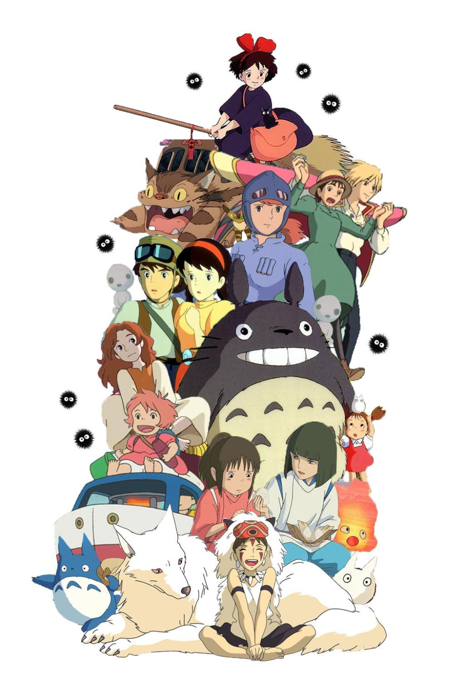

About Studio Ghibli
Studio Ghibli Inc. (Japanese: 株式会社スタジオジブリ, Hepburn: Kabushiki-gaisha Sutajio Jiburi) is a Japanese animation studio headquartered in Koganei, Tokyo.
It is best known for its animated feature films, and has also produced several short subjects, television commercials, and two television films.
Its mascot and most recognizable symbol is a character named Totoro, a giant spirit inspired by raccoon dogs (tanuki) and cats from the 1988 anime film My Neighbor Totoro.
Among the studio's highest-grossing films are Spirited Away (2001), Howl's Moving Castle (2004) and Ponyo (2008).
The studio was founded on June 15, 1985, by directors Hayao Miyazaki and Isao Takahata and producer Toshio Suzuki,
after the successful performance of Topcraft's Nausicaä of the Valley of the Wind (1984).
It has also collaborated with video game studios on the visual development of several games.
Five of the studio's films are among the ten highest-grossing anime feature films made in Japan.
Spirited Away is second, grossing 31.68 billion yen in Japan and over US$380 million worldwide; and Princess Mononoke is fourth, grossing 20.18 billion yen.
Many of their works have won the Animage Grand Prix award. Four have won the Japan Academy Prize for Animation of the Year.
Five of their films have received Academy Award nominations. Spirited Away won the 2002 Golden Bear and the 2003 Academy Award for Best Animated Feature.
On August 3, 2014, Studio Ghibli temporarily suspended production following Miyazaki's retirement.
In February 2017, Suzuki announced that Miyazaki had come out of retirement to direct a new feature film, How Do You Live?, which he intended to be his last film.